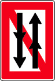
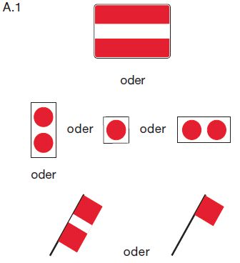
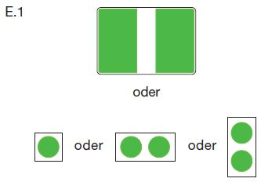

Auf einer Strecke, deren Beginn durch das Tafelzeichen A.4 oder A.4.1 (Anlage 7) gekennzeichnet ist, ist das Begegnen und Überholen verboten.
A.4
A.4.1

Das Verbot nach Satz 1 kann auf Fahrzeuge und Verbände ab einer bestimmten Länge oder Breite beschränkt werden; in diesem Fall werden die Länge oder Breite auf einer rechteckigen weißen zusätzlichen Tafel angegeben, die unterhalb des Tafelzeichens A.4 oder A.4.1 angebracht ist. Für eine nach Satz 1 gekennzeichnete Strecke gelten im Übrigen die Regelungen des § 6.07 Nummer 1 entsprechend.
2.
Wenn die zuständige Behörde auf einer bestimmten Strecke das Begegnen dadurch ausschließt, dass sie die Durchfahrt jeweils nur in einer Richtung gestattet, bedeutet:
a)
ein allgemeines Zeichen A.1 (Anlage 7): keine Durchfahrt;

b)
ein allgemeines Zeichen E.1 (Anlage 7):
Durchfahrt frei.

Je nach den örtlichen Umständen kann das Zeichen, das die Durchfahrt verbietet, durch das als Vorwarnzeichen verwendete Tafelzeichen B.8 (Anlage 7) angekündigt werden.
amtlicher Hinweis: § 6.08 Nummer 1 gilt weder für ein Kleinfahrzeug oder einen Verband im Sinne des § 6.02 Nummer 1 Satz 1 noch ist er einem solchen Kleinfahrzeug oder Verband gegenüber anzuwenden.